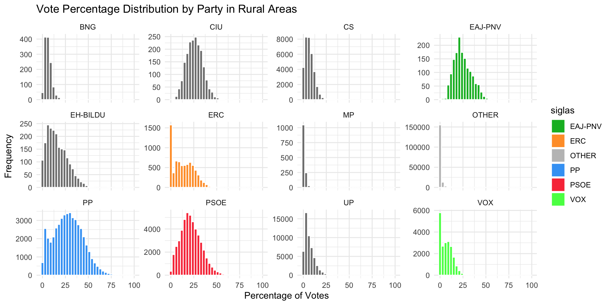

Data Programming Group Project
Overview
Exercise 1
Exercise 2
Exercise 3
Exercise 4
Exercise 5
Exercise 6
Original Exercise 1: Dorling Cartogram
Original Exercise 2: Income and Populistic Voting
Original Exercise 3: Vox’s electoral performance
Libraries
Set up
# define a custom theme
theme_presentation <- function() {
theme_minimal() +
theme(
text = element_text(size = 12),
plot.title = element_text(size = 16, face = "bold"),
plot.subtitle = element_text(size = 14),
axis.title = element_text(size = 12),
legend.position = "bottom",
legend.text = element_text(size = 10),)
}
# define the colors
party_colors <- c(
"PSOE" = "#F93D46",
"PP" = "#41A4F5",
"VOX" = "#53FF53",
"ERC" = "#FF9E33",
"EAJ-PNV" = "#04B82B",
"OTHER" = "#C0C0C0")
color_palette <- c(
"#E69F00", # orange
"#56B4E9", # light blue
"#009E73", # green
"#F0E442", # yellow
"#0072B2", # dark blue
"#D55E00", # red
"#CC79A7", # pink
"#999999", # grey
"#44AA99", # teal
"#332288", # indigo
"#AA4499", # purple
"#117733") # forest greenExercise 1
Which party was the winner in the municipalities with more than 100,000 habitants (census) in each of the elections?
big_municipalities <- election_data|>
filter(censo > 100000)
winners <- big_municipalities |>
group_by(codigo_municipio, anno, siglas) |>
summarise(total_votes = sum(num_votos, na.rm = TRUE), .groups = "drop") %>%
group_by(codigo_municipio, anno) |>
slice_max(total_votes, n = 1)
winners_plot <- ggplot(winners, aes(x = anno, fill = siglas)) +
geom_bar(position = "dodge") + scale_fill_manual(
values = party_colors)+
labs(title = "Winning Parties in Municipalities",
x = "Year", y = "Number of Municipalities", fill = "Party") +
theme_minimal()Regional analysis
#regional analysis
regional_summary <- big_municipalities |>
group_by(codigo_ccaa, partido_2, anno) |>
summarise(total_municipalities = n(), .groups = "drop") |>
arrange(desc(total_municipalities))
regional_plot <- ggplot(regional_summary, aes(x = anno, y = total_municipalities, color = partido_2)) +
geom_line(linewidth = 1.2) + scale_fill_manual(values = c(scale_fill_manual(
values = color_palette)))+
facet_wrap(~codigo_ccaa) +
labs(title = "Regional Performance of Parties Over Time",
x = "Year", y = "Number of Municipalities", color = "Party") +
theme_minimal()+
theme(axis.text.x = element_blank(),
axis.ticks.x = element_blank())Exercise 2
Which party was the second when the first was the PSOE? And when the first was the PP?
# Identify winners and second-place parties using siglas
ranked_parties <- big_municipalities |>
group_by(codigo_municipio, anno, siglas) |>
summarise(total_votes = sum(num_votos, na.rm = TRUE), .groups = "drop") |>
group_by(codigo_municipio, anno) |>
arrange(desc(total_votes)) |>
mutate(rank = row_number()) |>
ungroup()
# Filter for cases where the first-place party is PSOE or PP
second_places <- ranked_parties |>
filter(rank <= 2) |>
group_by(codigo_municipio, anno) |>
summarise(
first_place = siglas[rank == 1],
second_place = siglas[rank == 2],
.groups = "drop"
) |>
filter(first_place %in% c("PSOE", "PP"))
# Plot results
firstsecond_plot <- ggplot(second_places, aes(x = first_place, fill = second_place)) +
geom_bar(position = "dodge") +
scale_fill_manual(values = party_colors) +
labs(
title = "Second-Place Parties When First is PSOE or PP",
x = "First-Place Party", y = "Number of Municipalities", fill = "Second-Place Party"
) +
theme_presentation()Taking years into consideration:
# Summarize second-place parties over the years using siglas
second_places_year <- ranked_parties |>
filter(rank <= 2) |>
group_by(codigo_municipio, anno) |>
summarise(
first_place = siglas[rank == 1],
second_place = siglas[rank == 2],
.groups = "drop"
) |>
filter(first_place %in% c("PSOE", "PP"))
# Plot results: Grouped bar plot with years
firstsecond_year_plot <- ggplot(second_places_year, aes(x = factor(anno), fill = second_place)) +
geom_bar(position = "dodge") +
facet_wrap(~ first_place, scales = "free_y") +
scale_fill_manual(values = party_colors) +
labs(
title = "Second-Place Parties Over Time When First is PSOE or PP",
x = "Year of Election", y = "Number of Municipalities",
fill = "Second-Place Party"
) +
theme_presentation()Exercise 3
Who benefits from low turnout?
# Filter data for the 2016 election year
election_data <- election_data %>%
filter(anno == 2016) # Include only rows for 2016
# Categorize turnout based on participacion_1
election_data <- election_data %>%
mutate(
turnout_rate = participacion_1 / 100,
turnout_category = ifelse(turnout_rate < 0.5, "Low", "High")
)
# Summarize votes under Low Turnout using partido_2
low_turnout_data <- election_data %>%
filter(turnout_category == "Low") %>%
group_by(partido_2) %>%
summarise(total_votes = sum(num_votos, na.rm = TRUE), .groups = "drop") %>%
mutate(percentage = total_votes / sum(total_votes) * 100)
# Recode partido_2 to abbreviations for plotting
low_turnout_data <- low_turnout_data %>%
mutate(
partido_2 = recode(partido_2,
"CIUDADANOS" = "CS",
"CONVERGÈNCIA I UNIÓ" = "CIU",
"EH-BILDU" = "EH-BILDU",
"ESQUERRA REPUBLICANA DE CATALUNYA" = "ERC",
"PARTIDO POPULAR" = "PP",
"PSOE" = "PSOE",
"VOX" = "VOX",
.default = "OTHER")
)
# Set total seats and calculate distribution
total_seats <- 350
low_turnout_data <- low_turnout_data %>%
mutate(seats = round((total_votes / sum(total_votes)) * total_seats))
# Expand data to one row per seat
seat_positions <- low_turnout_data %>%
uncount(seats) %>%
mutate(seat_id = row_number())
# Assign seats to rows and distribute radially by party
num_rows <- 12 # Number of rows for the semicircle
seat_positions <- seat_positions %>%
arrange(partido_2) %>%
mutate(
row = ((seat_id - 1) %% num_rows) + 1,
pos_in_row = ((seat_id - 1) %/% num_rows) + 1
)
# Calculate x, y coordinates for radial alignment
seat_positions <- seat_positions %>%
mutate(
row_radius = num_rows - row + 1,
angle = (pos_in_row - 0.5) / max(pos_in_row) * pi,
x = row_radius * cos(angle),
y = row_radius * sin(angle)
)
# Plot the parliamentary diagram
parliamentary_plot <- ggplot(seat_positions, aes(x = x, y = y, fill = partido_2)) +
geom_point(shape = 21, size = 3) +
scale_fill_manual(values = party_colors) +
coord_fixed() +
labs(
title = "Spanish Parliamentary Representation Under Low Turnout (2016)",
subtitle = paste("Proportional allocation of", total_seats, "seats"),
x = NULL,
y = NULL,
fill = "Party"
) +
theme_void() +
theme(
legend.position = "right",
legend.title = element_text(size = 12),
legend.text = element_text(size = 10)
)Voting Results
Exercise 4
How to analyze the relationship between census and vote? Is it true that certain parties win in rural areas?
election_data <- readRDS("data/processed/election_data.rds")
# Define rural and urban areas
election_data <- election_data |>
mutate(area_type = case_when(
censo < 10000 ~ "Rural",
censo >= 10000 ~ "Urban"
))
# Summarize votes by area type and party
area_summary <- election_data |>
group_by(area_type, siglas) |>
summarise(total_votes = sum(num_votos, na.rm = TRUE),
total_municipalities = n(), .groups = "drop") |>
mutate(vote_share = total_votes / sum(total_votes))
# Visualize voting patterns in rural vs. urban areas
votingpatterns_plot <- ggplot(area_summary, aes(x = siglas, y = vote_share, fill = area_type)) +
geom_bar(stat = "identity", position = "dodge") +
scale_fill_manual(values = color_palette) +
labs(title = "Vote Share by Party in Rural vs. Urban Areas",
x = "Party", y = "Vote Share", fill = "Area Type") +
theme_presentation()Relationship between census size and vote share
# Analyze relationship between census size and vote share
census_vote <- election_data |>
group_by(censo, siglas) |>
summarise(total_votes = sum(num_votos, na.rm = TRUE), .groups = "drop")
# Correlation analysis
correlation_results <- census_vote |>
group_by(siglas) |>
summarise(correlation = cor(censo, total_votes, use = "complete.obs"))
print(correlation_results)# A tibble: 12 × 2
siglas correlation
<chr> <dbl>
1 BNG 0.0655
2 CIU 0.217
3 CS 0.773
4 EAJ-PNV 0.100
5 EH-BILDU 0.0764
6 ERC 0.343
7 MP 0.355
8 OTHER 0.688
9 PP 0.909
10 PSOE 0.944
11 UP 0.884
12 VOX 0.556 Winning Parties in Rural Areas
# Additional analysis: Top parties in rural areas
rural_winners <- election_data |>
filter(area_type == "Rural") |>
group_by(codigo_municipio, anno, siglas) |>
summarise(total_votes = sum(num_votos, na.rm = TRUE), .groups = "drop") |>
group_by(codigo_municipio, anno) |>
slice_max(total_votes, n = 1)
# We can take the analysis further and:
# 1. aggregate the data to count how often each party wins in rural areas:
rural_party_summary <- rural_winners |>
group_by(siglas) |>
summarise(wins = n(), .groups = "drop") |>
arrange(desc(wins))
# 2. Visualize Trends with a bar chart (to visualize which parties dominate in rural areas):
ruralareas_parties_plot <- ggplot(rural_party_summary, aes(x = reorder(siglas, wins), y = wins, fill = siglas)) +
geom_bar(stat = "identity") +
scale_fill_manual(values = party_colors) +
labs(title = "Winning Parties in Rural Areas", x = "Party", y = "Number of Wins") +
theme_minimal()Vote Percentage Distribution by Party in Rural Areas
# Faceted Histograms: split histogram into separate panels for each party.
faceted_plot <- ggplot(election_data, aes(x = num_votos / censo * 100, fill = siglas)) +
geom_histogram(binwidth = 3, color = "white") +
facet_wrap(~ siglas, scales = "free_y") +
scale_fill_manual(values = party_colors) +
labs(title = "Vote Percentage Distribution by Party in Rural Areas",
x = "Percentage of Votes",
y = "Frequency") +
theme_minimal()
Vote Percentage Distribution by Party in Rural Areas
## !! Overlapping Line Charts (Frequency Polygons)
overlapping_plot <- ggplot(election_data, aes(x = num_votos / censo * 100, color = siglas)) +
geom_freqpoly(binwidth = 2, size = 1) +
scale_color_manual(values = party_colors) +
labs(title = "Vote Percentage Distribution by Party in Rural Areas",
x = "Percentage of Votes",
y = "Frequency",
color = "Party") +
theme_minimal()Exercise 5
How to calibrate the error of the polls (remember that the polls are voting intentions at national level)?
# Set target dates - Changed to November election
target_date_survey <- as.Date("2019-11-10") # November election date
target_date_election <- as.Date("2019-11-01") # First of November
# Create party name mapping with display names and colors
party_mapping <- data.frame(
survey_name = c(
"CIUDADANOS",
"PARTIDO NACIONALISTA VASCO",
"PARTIDO POPULAR",
"PARTIDO SOCIALISTA OBRERO ESPAÑOL",
"UNIDAS PODEMOS - IU",
"ESQUERRA REPUBLICANA DE CATALUNYA",
"EH-BILDU",
"VOX",
"OTHER"
),
election_name = c(
"CS",
"EAJ-PNV",
"PP",
"PSOE",
"UP",
"ERC",
"EH-BILDU",
"VOX",
"OTHER"
),
display_name = c(
"CS",
"EAJ-PNV",
"PP",
"PSOE",
"UP",
"ERC",
"EH-BILDU",
"VOX",
"OTHER"
),
party_color = c(
"#E9521D", # CS
"#04B82B", # EAJ-PNV
"#41A4F5", # PP
"#F93D46", # PSOE
"#7C316E", # UP
"#FF9E33", # ERC
"#03CFB5", # EH-BILDU
"#53FF53", # VOX
"#C0C0C0" # OTHER
)
)
data_surveys_filtered <- surveys %>%
filter(date_elec == target_date_survey) %>%
group_by(party_name) %>%
summarise(
vote_intention = mean(vote_intention, na.rm = TRUE),
n_polls = n()
) %>%
filter(!is.na(vote_intention)) %>%
mutate(vote_share_intention = vote_intention / sum(vote_intention) * 100) %>%
left_join(party_mapping, by = c("party_name" = "survey_name"))
data_election <- election_data %>%
mutate(date_elec = as.Date(paste(anno, mes, "01", sep = "-")))
data_election_filtered <- data_election %>%
filter(date_elec == target_date_election) %>%
group_by(siglas) %>%
summarise(
total_votes = sum(num_votos, na.rm = TRUE)
) %>%
mutate(vote_share_actual = total_votes / sum(total_votes) * 100)
# Merge datasets using the mapped names
comparison_data <- data_surveys_filtered %>%
left_join(data_election_filtered, by = c("election_name" = "siglas"))
# Calculate errors
comparison_data <- comparison_data %>%
mutate(
absolute_error = vote_share_intention - vote_share_actual,
relative_error = (vote_share_intention - vote_share_actual) / vote_share_actual * 100
)
# Calculate overall error metrics
error_metrics <- comparison_data %>%
filter(!is.na(absolute_error)) %>%
summarise(
mae = mean(abs(absolute_error)),
rmse = sqrt(mean(absolute_error^2)),
mean_error = mean(absolute_error)
)
error_plot <- ggplot(
comparison_data %>% filter(!is.na(absolute_error)),
aes(x = reorder(display_name, -vote_share_actual))
) +
geom_col(aes(y = absolute_error), fill = comparison_data$party_color[!is.na(comparison_data$absolute_error)]) +
geom_hline(yintercept = 0, linetype = "dashed", color = "black") +
labs(
title = "Polling Error by Party - November 2019 Election",
subtitle = paste("Mean Absolute Error:", round(error_metrics$mae, 2), "%"),
x = "Party",
y = "Error in Vote Share (Prediction - Actual) %"
) +
theme_minimal() +
theme(
axis.text.x = element_text(angle = 45, hjust = 1),
panel.grid.major = element_line(color = "gray90"),
panel.grid.minor = element_line(color = "gray95")
)Polling Inacuracies
[1] "\nDetailed Error Analysis:"print(comparison_data %>%
select(display_name, vote_share_intention, vote_share_actual, absolute_error, relative_error))# A tibble: 10 × 5
display_name vote_share_intention vote_share_actual absolute_error
<chr> <dbl> <dbl> <dbl>
1 CS 11.5 6.86 4.59
2 EH-BILDU 1.34 1.16 0.179
3 ERC 4.94 3.67 1.27
4 <NA> 4.25 NA NA
5 OTHER 1.07 7.10 -6.03
6 EAJ-PNV 2.03 1.58 0.451
7 PP 21.1 21.0 0.0539
8 PSOE 29.4 28.3 1.09
9 UP 13.4 13.0 0.433
10 VOX 11.0 15.3 -4.23
# ℹ 1 more variable: relative_error <dbl>[1] "\nOverall Error Metrics:"# A tibble: 1 × 3
mae rmse mean_error
<dbl> <dbl> <dbl>
1 2.04 2.96 -0.244Exercise 6
election_data_clean <- election_data |>
filter(!is.na(partido_2) & !is.na(censo) & !is.na(num_votos)) |>
filter(censo > 0 & num_votos >= 0) |>
mutate(partido_2 = str_to_lower(str_trim(partido_2)))
surveys_clean <- surveys |>
filter(!is.na(vote_intention) & !is.na(turnout)) |>
mutate(
vote_intention = ifelse(vote_intention > 1, vote_intention / 100, vote_intention),
turnout = ifelse(turnout > 1, turnout / 100, turnout),
party_name = str_to_lower(str_trim(party_name))
)
surveys_clean <- surveys_clean |>
group_by(party_name, pollster) |>
summarise(
avg_vote_intention = mean(vote_intention, na.rm = TRUE),
avg_turnout = mean(turnout, na.rm = TRUE),
.groups = "drop"
)
merged_data <- election_data_clean|>
inner_join(surveys_clean, by = c("partido_2" = "party_name"),relationship = "many-to-many")
merged_data <- merged_data |>
mutate(
errors = abs(avg_vote_intention * 100 - (num_votos / censo * 100))
)
pollster_performance <- merged_data%>%
group_by(pollster) %>%
summarise(
mean_error = mean(errors, na.rm = TRUE),
max_error = max(errors, na.rm = TRUE),
total_error = sum(errors, na.rm = TRUE),
.groups = "drop"
)
best_pollsters <- pollster_performance |>
arrange(mean_error) |>
slice(1:5)
worst_pollsters <- pollster_performance |>
arrange(desc(mean_error))|>
slice(1:5)
combined_pollsters <- bind_rows(
best_pollsters |> mutate(category = "Best"),
worst_pollsters |> mutate(category = "Worst")
)
combined_pollsters <- combined_pollsters %>%
arrange(mean_error)
pollster_plot <- ggplot(combined_pollsters, aes(x = reorder(pollster, desc(mean_error)), y = mean_error)) +
geom_bar(stat = "identity", position = "dodge",fill= "blue") +
labs(
title = "Best and Worst Pollsters by Mean Error",
x = "Pollster",
y = "Mean Error (Percentage Points)",
) + theme_minimal()+
coord_flip() Original exercise 1: Dorling cartogram
First steps
# Filter election_data
election_data <- readRDS("data/processed/election_data.rds")
elections_1911 <- election_data |>
filter(anno == 2019 & mes == 11) |>
select(municipio, cod_mun, codigo_provincia, num_votos, siglas, partido, partido_2)
winners_prov <- elections_1911 |>
group_by(codigo_provincia, siglas) |>
summarise(votos_totales = sum(num_votos, na.rm = TRUE)) |>
slice_max(votos_totales)
# Prepare geospatial data:
provinces <- esp_get_prov() |>
mutate(provincia = prov.shortname.en) |>
mutate(codigo_provincia = cpro) |>
select(provincia, codigo_provincia)
# Set Mercator projection:
provinces <- st_transform(provinces, 3857)
# Population data:
pop_prov <- mapSpain::pobmun19 |>
rename(codigo_provincia = cpro) |>
group_by(codigo_provincia) |>
summarise(n_pop = sum(pob19))
# Join all dataframes:
pop_prov <- provinces |>
left_join(pop_prov, by = "codigo_provincia") |>
left_join(winners_prov, by = "codigo_provincia")Create the cartogram
pop_prov_cartog <- cartogram_dorling(pop_prov,
weight = "n_pop")
pop_prov_cartog <- ggplot(pop_prov_cartog) +
geom_sf(aes(fill = siglas)) +
scale_fill_manual(values = party_colors,
name = "Party",
breaks = c("PSOE", "PP", "VOX", "ERC", "EAJ-PNV", "OTHER")) +
theme_void() +
labs(title = "2019 November Elections: Most voted party by province",
subtitle = "(The size of each circle represents the population of each province)") +
theme(plot.title = element_text(face = "bold",
margin = unit(c(0.6, 0, 0.2, 0), "cm"),
size = 18,
family = "rob_cond"),
plot.subtitle = element_text(family = "rob_cond",
size = 14),
legend.title = element_text(face = "bold",
family = "rob_cond",
size = 15),
legend.text = element_text(family = "rob_cond",
size = 12))Original exercise 2: Income and Populist Voting
First steps: Data download and wrangling
# source: REGDATA_v70_55_23.xlsx from :
# https://www.bbvaresearch.com/en/publicaciones/spain-long-series-of-regional-
# economic-and-demographic-aggregates-2023-update/
# convert both datasets to long format
gdp_long <- gdp_data |>
pivot_longer(
cols = -'...1',
names_to = "year",
values_to = "gdp") |>
rename(region = '...1')
pop_long <- pop_data |>
pivot_longer(
cols = -'...1',
names_to = "year",
values_to = "population" ) |>
rename(region = '...1')
# join GDP and population data
combined_data <- gdp_long |>
left_join(pop_long, by = c("region", "year"))
# calculate GDP per capita
gdp_per_capita <- combined_data |>
mutate(gdp_per_capita = gdp / population) |>
arrange(region, year)
# calculate growth rates (1999-2019)
growth_rates <- gdp_per_capita |>
group_by(region) |>
summarize(
gdp_per_capita_1999 = first(gdp_per_capita),
gdp_per_capita_2019 = last(gdp_per_capita),
total_growth = (gdp_per_capita_2019 / gdp_per_capita_1999 - 1) * 100) |>
arrange(desc(total_growth))
# calculate national average growth
national_avg_growth <- mean(growth_rates$total_growth)
# add relative growth compared to national average
growth_rates <- growth_rates |>
mutate(
relative_growth = total_growth - national_avg_growth,
growth_category = if_else(relative_growth >= 0, "Above Average", "Below Average"))
# view results
print("GDP per capita growth rates by region (1999-2019):")[1] "GDP per capita growth rates by region (1999-2019):"# A tibble: 19 × 6
region gdp_per_capita_1999 gdp_per_capita_2019 total_growth relative_growth
<chr> <dbl> <dbl> <dbl> <dbl>
1 EXT 14.0 21.3 52.0 28.0
2 GAL 17.5 24.8 41.5 17.6
3 CYL 19.1 26.0 35.8 11.9
4 PV 26.2 34.6 32.3 8.33
5 ARA 23.4 30.4 29.7 5.76
6 MAD 29.3 37.9 29.2 5.19
7 AST 19.4 24.7 27.1 3.15
8 AND 16.5 20.8 25.7 1.76
9 total 22.2 27.7 25.0 1.05
10 NAV 26.6 33.2 24.6 0.670
11 CLM 17.9 22.2 24.3 0.361
12 CANT 20.7 25.4 23.0 -0.947
13 MUR 19.2 23.0 19.3 -4.62
14 CAT 27.4 32.5 18.9 -5.10
15 RIO 24.3 28.8 18.5 -5.50
16 VAL 21.2 24.2 14.3 -9.63
17 CyMel 18.2 19.9 9.15 -14.8
18 CAN 21.3 21.9 2.81 -21.2
19 BAL 29.8 30.4 2.07 -21.9
# ℹ 1 more variable: growth_category <chr>[1] "National average growth rate: 23.97 %"Next: Get VOX election results and join
election_data <- readRDS("data/processed/election_data.rds")
# calculate VOX results by CCAA for November 2019
vox_results_2019 <- election_data |>
filter(anno == 2019, mes == 11) |>
mutate(
party_group = case_when(
partido_2 == "VOX" ~ "VOX",
TRUE ~ "OTHER")) |>
group_by(codigo_ccaa, party_group) |>
summarise(
votes = sum(num_votos, na.rm = TRUE),
.groups = 'drop') |>
pivot_wider(
names_from = party_group,
values_from = votes,
values_fill = 0) |>
mutate(
total_votes = VOX + OTHER,
vox_percentage = (VOX / total_votes) * 100)
# create lookup table with official CCAA codes
# this is based on https://www.ine.es/en/daco/daco42/codmun/cod_ccaa_en.htm
ccaa_lookup <- tibble(
codigo_ccaa = c(paste0("0", 1:9), as.character(10:17), "18", "19"),
region = c("AND", "ARA", "AST", "BAL", "CAN", "CANT", "CYL", "CLM",
"CAT", "VAL", "EXT", "GAL", "MAD", "MUR", "NAV", "PV",
"RIO", "CyMel", "CyMel"))
# join CCAA codes with results and combine Ceuta and Melilla
vox_results_2019_named <- vox_results_2019 |>
left_join(ccaa_lookup, by = "codigo_ccaa") |>
group_by(region) |>
summarise(
VOX = sum(VOX),
OTHER = sum(OTHER),
total_votes = sum(total_votes),
vox_percentage = (sum(VOX) / sum(total_votes)) * 100) |>
arrange(region)
# now join with GDP growth data
combined_analysis <- growth_rates |>
filter(region != "total") |> # Remove the 'total' row
left_join(vox_results_2019_named, by = "region") |>
select(region, relative_growth, vox_percentage, growth_category)
# print combined results
print("\nCombined GDP growth and VOX support analysis:")[1] "\nCombined GDP growth and VOX support analysis:"# A tibble: 18 × 4
region relative_growth vox_percentage growth_category
<chr> <dbl> <dbl> <chr>
1 EXT 28.0 7.89 Above Average
2 GAL 17.6 18.5 Above Average
3 CYL 11.9 22.1 Above Average
4 PV 8.33 11.6 Above Average
5 ARA 5.76 17.8 Above Average
6 MAD 5.19 5.85 Above Average
7 AST 3.15 16.1 Above Average
8 AND 1.76 20.6 Above Average
9 NAV 0.670 28.2 Above Average
10 CLM 0.361 16.8 Above Average
11 CANT -0.947 15.0 Below Average
12 MUR -4.62 2.47 Below Average
13 CAT -5.10 6.34 Below Average
14 RIO -5.50 18.6 Below Average
15 VAL -9.63 17.0 Below Average
16 CyMel -14.8 27.8 Below Average
17 CAN -21.2 12.6 Below Average
18 BAL -21.9 17.3 Below Average Analysis and scatterplot
# calculate correlation (excluding NA values)
correlation <- cor(combined_analysis$relative_growth,
combined_analysis$vox_percentage,
use = "complete.obs") # this will exclude NA values
print(paste("\nCorrelation between relative GDP growth and VOX support:", round(correlation, 3)))[1] "\nCorrelation between relative GDP growth and VOX support: -0.142"# create scatter plot
scatter_plot_1 <- ggplot(combined_analysis, aes(x = relative_growth, y = vox_percentage)) +
geom_point(aes(color = growth_category), size = 3) +
geom_text(aes(label = region), vjust = -0.5, size = 3) +
geom_smooth(method = "lm", color = color_palette[6], linetype = "dashed", se = FALSE) +
labs(
title = "Relationship between Economic Growth and VOX Support",
subtitle = "By Autonomous Community (1999-2019)",
x = "Relative GDP per Capita Growth (%)",
y = "VOX Vote Share (%)",
color = "Growth Category"
) +
theme_presentation() +
theme(
legend.position = "bottom",
plot.title = element_text(face = "bold"))
Original Exercise 3: Vox’s electoral performance
Exercise:
Analyze VOX’s electoral performance in the Nov 2019 general election by studying (1) how voter turnout relates to VOX’s electoral success across municipalities, (2) visualising the geographic concentration in the support of Vox, and (3) studying electoral fragmentation.
Analysing how voter turnout relates to Vox’s electoral success
# first, let's create municipality_summary for November 2019 (using both month and year)
municipality_summary_2019 <- election_data |>
filter(anno == 2019, mes == 11) |> # specifying November 2019
group_by(municipio) |>
slice(1) |>
summarise(
censo = censo,
total_votes = votos_candidaturas + votos_blancos + votos_nulos,
valid_votes = votos_candidaturas,
turnout = (total_votes / censo) * 100) |>
filter(!is.na(turnout), turnout <= 100, turnout > 0)
# then calculate party votes for the same election
party_votes_2019 <- election_data |>
filter(anno == 2019, mes == 11) |> # again, specifying November 2019
mutate(
party_group = case_when(
partido_2 == "VOX" ~ "VOX",
TRUE ~ "OTHER")) |>
group_by(municipio, party_group) |>
summarise(
votes = sum(num_votos, na.rm = TRUE),
.groups = 'drop') |>
pivot_wider(
names_from = party_group,
values_from = votes,
values_fill = 0)
# join the two objects
final_analysis <- municipality_summary_2019 |>
left_join(party_votes_2019, by = "municipio") |>
mutate(
vox_share = (VOX / valid_votes) * 100) |>
select(municipio, censo, turnout, vox_share)
# calculate the correlation
cor(final_analysis$turnout, final_analysis$vox_share)[1] 0.003779757 # we tested for different sizes of municipalities by adding a population
# threshold; the correlations were more or less the same
# visualise
turnout_vox_share_plot <- ggplot(final_analysis) +
geom_point(aes(x = turnout, y = vox_share), alpha = 0.3, color = color_palette[3], size = 2) +
geom_smooth(aes(x = turnout, y = vox_share), method = "lm", se = TRUE, color = color_palette[3]) +
labs(
title = "Relationship between Turnout and VOX Vote Share (November 2019)",
subtitle = "Analysis by Municipality",
x = "Voter Turnout (%)",
y = "VOX Vote Share (%)"
) +
theme_presentation()Visualising the geographic concentration in the support of Vox
regional_analysis <- election_data |>
filter(anno == 2019, mes == 11) |>
group_by(codigo_provincia) |>
summarise(total_votes = sum(num_votos, na.rm = TRUE),
vox_share = sum(num_votos[partido_2 == "VOX"], na.rm = TRUE) / total_votes * 100)
# get geospatial data for Spanish provinces
provinces <- esp_get_prov() |>
mutate(
provincia = prov.shortname.en,
codigo_provincia = as.character(cpro)) |>
select(provincia, codigo_provincia)
# transform to Mercator projection
provinces <- st_transform(provinces, 3857)
# get population data
pop_prov <- mapSpain::pobmun19 |>
rename(codigo_provincia = cpro) |>
mutate(codigo_provincia = as.character(codigo_provincia)) |>
group_by(codigo_provincia) |>
summarise(n_pop = sum(pob19))
# join all data
final_data <- provinces %>%
left_join(pop_prov, by = "codigo_provincia") %>%
left_join(regional_analysis, by = "codigo_provincia")
# set up font
sysfonts::font_add_google("Roboto Condensed", family = "rob_cond")
showtext::showtext_auto()
# create color palette for VOX vote share
vox_colors <- colorRampPalette(c("#FFFFFF", party_colors["VOX"]))(5)
# create Dorling cartogram
cartogram_plot <- cartogram_dorling(final_data, weight = "n_pop")
# create the final plot
cartogram_vox_plot <- ggplot(cartogram_plot) +
geom_sf(aes(fill = vox_share)) +
scale_fill_gradientn(
colors = vox_colors,
name = "VOX Vote Share (%)",
limits = c(0, max(regional_analysis$vox_share)),
breaks = seq(0, max(regional_analysis$vox_share), length.out = 5),
labels = scales::label_number(accuracy = 0.1)) +
theme_void() +
labs(
title = "VOX Vote Share by Province (November 2019)",
subtitle = "Circle size represents province population") +
theme(
plot.title = element_text(
face = "bold",
margin = unit(c(0.6, 0, 0.2, 0), "cm"),
size = 18,
family = "rob_cond"),
plot.subtitle = element_text(
family = "rob_cond",
size = 14),
legend.title = element_text(
face = "bold",
family = "rob_cond",
size = 15),
legend.text = element_text(
family = "rob_cond",
size = 12))Studying electoral fragmentation
fragmentation_analysis <- election_data |>
filter(anno == 2019, mes == 11) |>
group_by(municipio) |>
summarise(
total_votes = sum(num_votos, na.rm = TRUE),
vox_share = sum(num_votos[partido_2 == "VOX"], na.rm = TRUE) / total_votes * 100,
pp_share = sum(num_votos[partido_2 == "PARTIDO POPULAR"], na.rm = TRUE) / total_votes * 100,
psoe_share = sum(num_votos[partido_2 == "PARTIDO SOCIALISTA OBRERO ESPAÑOL"], na.rm = TRUE) / total_votes * 100,
traditional_share = pp_share + psoe_share, # combined share of traditional parties
effective_parties = 1 / sum((num_votos/total_votes)^2, na.rm = TRUE))
# first visualisation: scatter plot of VOX share vs effective number of parties
fragmentation_analysis_1 <- ggplot(fragmentation_analysis) +
geom_point(aes(x = effective_parties, y = vox_share),
alpha = 0.4, color = color_palette[3]) +
geom_smooth(aes(x = effective_parties, y = vox_share),
method = "lm", color = color_palette[2]) +
labs(
title = "VOX Support vs Electoral Fragmentation",
subtitle = "November 2019 Elections",
x = "Effective Number of Parties",
y = "VOX Vote Share (%)"
) +
theme_presentation()
# second visualisation: scatter plot with traditional party share
fragmentation_analysis_2 <- ggplot(fragmentation_analysis) +
geom_point(aes(x = traditional_share, y = vox_share),
alpha = 0.4, color = color_palette[6]) +
geom_smooth(aes(x = traditional_share, y = vox_share),
method = "lm", color = color_palette[10]) +
labs(
title = "VOX Support vs Traditional Party Support",
subtitle = "November 2019 Elections",
x = "Combined PP + PSOE Vote Share (%)",
y = "VOX Vote Share (%)") +
theme_presentation()
# calculate correlations
cor_analysis <- fragmentation_analysis |>
summarise(
cor_fragmentation = cor(effective_parties, vox_share, use = "complete.obs"),
cor_traditional = cor(traditional_share, vox_share, use = "complete.obs"))
print("Correlation Analysis:")[1] "Correlation Analysis:"# A tibble: 1 × 2
cor_fragmentation cor_traditional
<dbl> <dbl>
1 0.0494 0.315